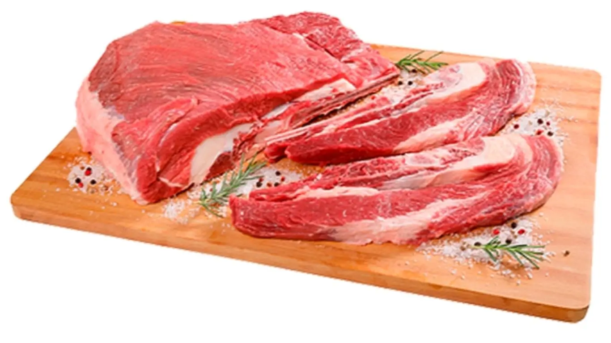

Mapa CarneCerta
Versátil, saboroso e muito usado em pratos tradicionais
A ponta de peito é um corte de boa resposta em assados e cozimentos, com sabor marcante e textura firme.

Ideal para • assado • panela • cozido
Maciez
3/5
Equilibrada
Gordura
3/5
Moderada
Sabor
4/5
Marcante
Abrir recomendador inteligente
Ponta de Peito
Corte muito versátil, com boa resposta em preparos tradicionais e bastante valorizado por seu sabor.
A ponta de peito se destaca em assados e cozimentos mais longos, oferecendo uma textura firme e um perfil saboroso bastante interessante para receitas caseiras.
Assado
Panela
Cozido
4.2
Corte tradicional
Excelente para quem busca um corte com boa versatilidade e sabor bem presente em receitas simples e tradicionais.
Ideal para
Dica do açougueiro IA
O cozimento controlado e o descanso antes de cortar ajudam a trazer mais suculência e melhor textura.